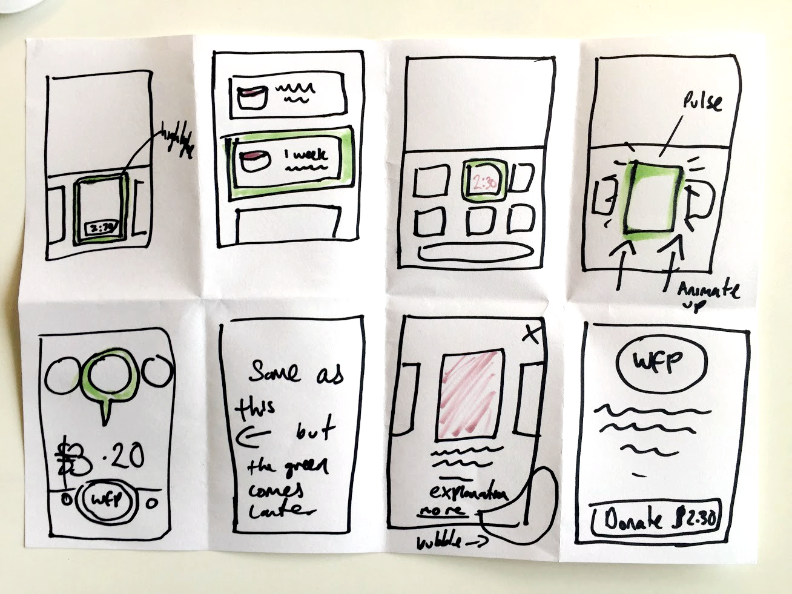
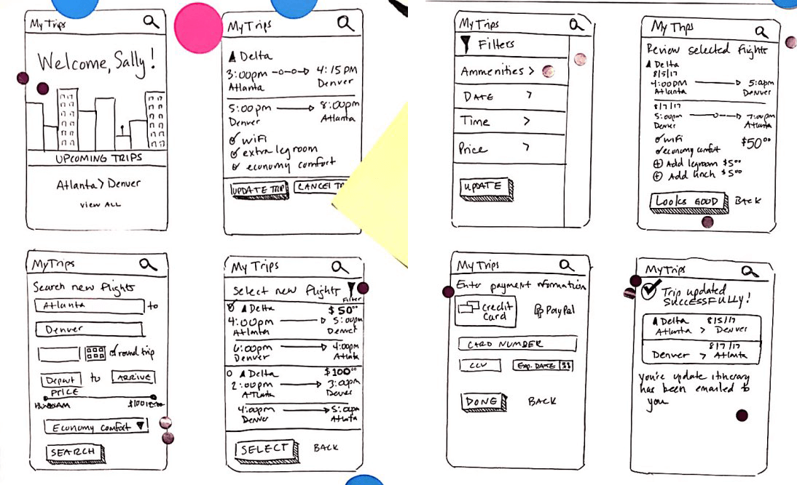
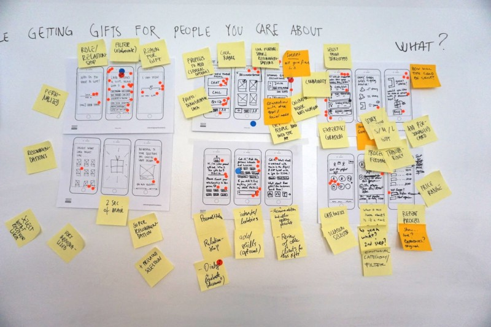
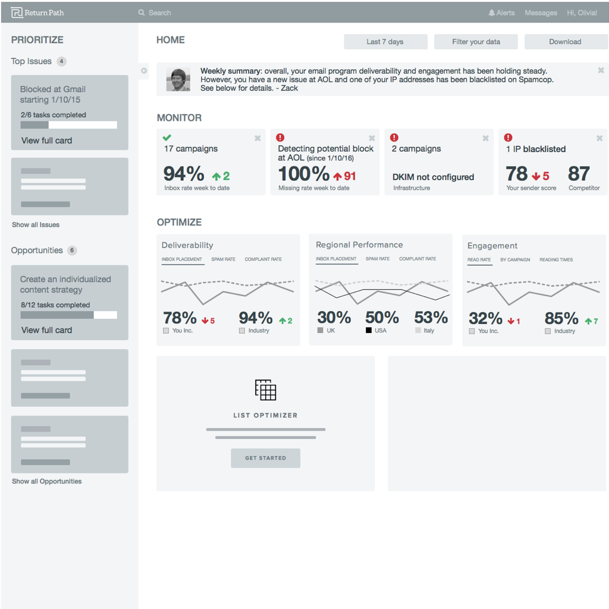

Aim of the Presentation
To answer the following questions to various audience;
A Methodology for User Centred Design
Answering critical business questions through design, prototyping and testing
Created by Turlough McAnespy


Design Thinking
1. Finding the right problem first
- A project often begins with objectives that are actually solutions
- We need to step out of these outcome assumptions, and start by uncovering the real problems, their root causes, and how people currently deal with them
2. Divergent & convergent thinking
- The design thinking process is ultimately a divergent and convergent thinking process
- Understand people and their problems, and then translate findings into one or a few problem statements
- To find the best solution, a cross-disciplinary group first brainstorm a variety of potential solutions
- Through evaluation, comparison, and consolidation, a limited number of solutions are selected for prototyping and testing
3. Iterative process
- There are no perfect solutions, only trade-offs. Iterations are indispensable. Prototyping and testing uncover the issues and gaps in the initial solution, and drive design thinkers to make refinements or develop new solutions. In this process, design thinkers learn more about the audience and may go back to redefine the problems.
Lots of different names and diagrams

What is Design Thinking?
Design Thinking is an iterative process in which we seek to understand the user, challenge assumptions, and redefine problems in an attempt to identify alternative strategies and solutions that might not be instantly apparent with our initial level of understanding.
Why a Design Sprint?
To answer critical business questions through design, prototyping and testing
IE - Design Thinking sqeezed into a small period of time
What is a Design Sprint?
A unique four day process for validating ideas and solving big challenges through prototyping and testing ideas with users.
You start with something vague, and finish with real feedback and something extremely tangible.
What are the benefits?
The product doesn't need to go full cycle to learn about the opportunities and gather feedback.


What is the general process?
- Understand
- Define the Challenge
- Sketch/Produce Solutions (Concepts)
- Decide/Vote on Solutions
- Storyboard
- Prototype
- Test/Validate
1 Understand
2 Define the Challenge
- Expert Interviews - CEO, Sales, Engineer, Marketing, Design
- Personas
- User Journey Map
- Long term Goal + Sprint Questions
Example of Personas

Example of a User Journey Map

3 Sketch / Produce Solutions (Concepts)
- Lightning Demo
- 4-part Sketching
- Note taking
- Doodling
- Crazy 8's
- Concept
Produce Solutions

Example of a Crazy 8
Example of a Concept
4 Decide / Vote on Solutions
- Heat Map Vote
- Solution Presentation
- Straw Poll Vote
- Decider Vote
Example of a Heat Map
5 Prototype
The Prototype stage is for developing what was decided on, into something that can be Validated in testing. There is a range of fidelity that can be produced at this stage and which to use depends on a number on the scope of the Problem. The most useful outputs for us are;
- Sketched Storyboards
- Interactive Figma Prototypes
The Storyboard
- User Test Flow
- Storyboarding
Example of a Storyboard

Prototype - to use and test
6 Validate / Test
- Need a list of Questions
- Two to run test - moderator and note taker
- Write - note positives, note negatives
- 45-60 mins per test
- Simple questions to warm up
- Screengrabs or Webcam if others need to see
- Google Hangouts - link to send invites
- Feedbackwall
Example of Feedback wall

Iterate til End
Why Prototype?
Either within a fully developed DT Methodology or a cheap gorilla version;
- Reframe the development around the User
- Explore solutions cheaply
- Gather feedback before developing
Why use UI Common Patterns & Components?
Design Thinking encourages challenging of assumptions, while also building iteritively on previously identified value
- We should Design for patterns for which users are accustomed - re-inventing the wheel isn't just costly, it ends with a worse car
- And use these Patterns as a foundation for our Prototyping, which then allows you to better address the Users needs
Why use UI Common Patterns & Components?
- Not all Patterns are black and white
- Google have still not migrated all their UIs to Material Design - a paradigm shift from all prior UI work, because the Patterns in their systems are so universally used and understood, that thats not a problem to the users
Why use Figma?
- Figma is UI and UX design application, with excellent design, prototyping tools.
- Arguably the industry's leading interface design tool with features which support teams working on every phase of the design process
- It forces the designer to think more like a Front-end dev but facilitates her work as a designer
Why use Bootstrap?
- "Bootstrap is a giant collection of handy, reusable bits of code written in HTML, CSS, and JavaScript."
- Its not a Framework, its too opinionated
- Its a Toolkit of well chosen Patterns
- Largely built around a Modular philosophy so it also supports the maintenance of CSS in large projects
- Why create a Design System?